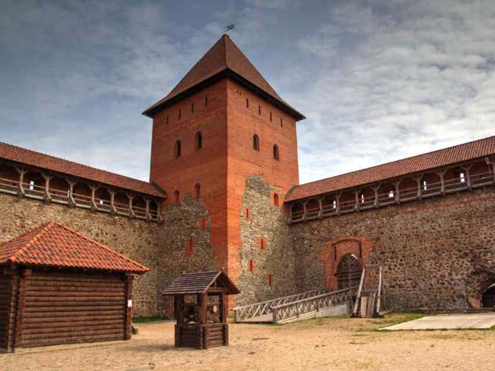
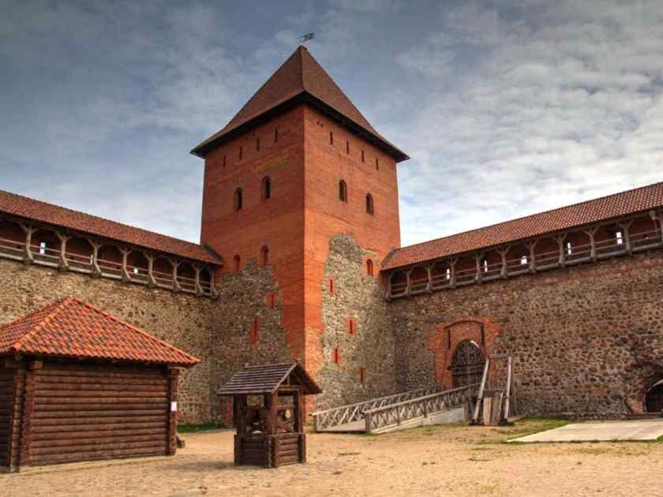

Лидский замок
В 1323 году по указу князя Гедемина был возведён Лидский замок. Строили его из камня и кирпича, и представлял он собой классическую форму оборонительной крепости – неправильный прямоугольник с 2 башнями, расположенными на углах. Место для строительства было выбрано удачно – песчаный холм был защищён водами болотистых рек Каменка и Лидея с одной стороны и 20-метровым рвом – с другой.
 

Лидский замок многократно терпел наступления и штурмы. В его стены врывались крестоносцы, вторгались английские и немецкие воины, войска смоленских и московских князей, отряды крымских татар. Во время Северной войны на долю замка выпали самые крупные разрушения, его башни были взорваны, а сама крепость превратилась почти в руины.
Ещё больший ужас постиг дворец, когда в 1891 году его стены поглотил пожар. Был разрушен Лидский центр, ратуша, стены и западная башня. Крепость буквально разобрали по кирпичам, распродали его строения и даже растянули песок с холма.
В начале XX века оплот был частично отреставрирован и включён в список архитектурного наследия Беларуси. В 1983 году была произведена реконструкция двух башен, в которых сейчас выставлены экспозиционные залы. Каждый год здесь проводятся рыцарские фестивали.
Лидский замок располагается в Гродненской области, в г. Лида по ул. Победы, 37а. Взрослые могут посетить музейный комплекс за 10 рублей, студенты – 7 рублей, школьники – 5 рублей. Время работы: с 10:00 до 18:30.